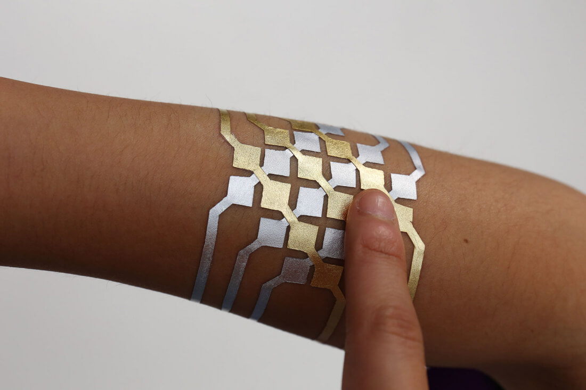
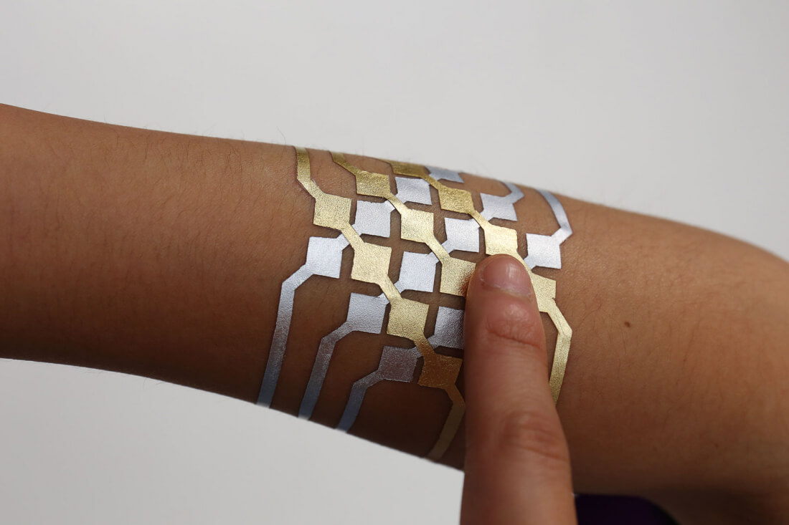

Wearables
Smart tattoos as a new way of communicating
Opdracht
Voor deze opdracht heb ik een concept verzonnen waarbij je door middel van smart tattoos je vrienden terug kunt vinden op een festival. Daarbij moet jij en degene die je wilt zoeken de smart tattoo en de ondersteunende app hebben. Het begint bij de app, die verbonden is aan de smart tattoo. Stel je voor dat je naar een festival gaat met 5 andere vrienden. Je moet ervoor zorgen dat de app is verbonden met de smart tattoo. Je moet de app toegang verlenen tot je locatie en je moet een gebruikersnaam hebben. Je kunt de vijf nieuwe mensen toevoegen door middel van hun telefoonnummer. Je kunt vervolgens elk persoon aan een deel van de tattoo koppelen. Voor het kunnen zien van de locatie van een gebruiker wordt de GPS in de smartphone gebruikt. Het is dus een vereiste dat je je smartphone bij je hebt. De tattoo kun je opbouwen in 'lagen' (zie schetsen). Een strip is dan een laag en een zo'n strip kun je linken aan een contactpersoon. Je kunt per persoon instellen welk deel van de tattoo er ingedrukt moet worden om de locatie van diegene op te sporen. Dit betekent overigens niet dat je maar een persoon tegelijk kan opsporen. Als je op strip klikt, laat hij de locatie van die contact persoon zien en als je er weer op klikt wordt hij weer uitgezet. De smart tattoo functioneerd dus eigenlijk als een touchpad. Waarom je hem uit en aan kan zetten heeft te maken met de volgende functie. De tattoo wordt groen als je in de goede richting wijst van waar die persoon is, je moet dan dus die kant op lopen. De tattoo wordt rood als je de verkeerde kant op wijst, als je die kant op loopt weet je dus dat je verkeerd loopt. Dit is bijvoorbeeld ook heel leuk als je met een paar vrienden naar een feest gaat en je weet dat er ook andere mensen komen waarmee je niet naar het feest komt, maar je wilt ze wel graag meeten op het feest. Deze smart tattoo is dan ideaal om elkaar snel terug te kunnen vinden. De smart tattoo kun je steeds uitbreiden. Als je bijvoorbeeld met vijf vrienden ergens heen gaat, moet je vijf strips gebruiken. De smart tattoo kan voorkomen in strips, pijlen, stippen of vierkanten. Ik heb gekozen voor simpele vormen, omdat het dan makkelijk is om er steeds een aan toe te voegen of weg te halen. De vormen zijn niet hoger dan 1 cm en niet langer dan 3 cm. Op die manier wordt de tattoo niet te groot als je hem uitbreid en er is ook niet veel ruimte nodig. Om de communiceren met de telefoon kan er een NFC worden gebruikt. Verder is er een GPS nodig, maar die zit in de smartphone.
Hieronder staat een paar voorbeelden van hoe de smart tattoo er in het echt uit zou kunnen zien:

 

Onderzoek
Voordat ik ben gaan nadenken over een concept, heb ik onderzoek gedaan naar smart tattoos op internet. Wat mij erg heeft geïnspireerd, is het project Duoskin. Dit zijn smart tattoos die verschillende functies kunnen hebben. Er worden verschillende voorbeelden gegeven. Een smart tatto kan dienen als knoppen of touchpad dienen om je telefoon mee te bedienen. Ook kunnen ze bijvoorbeeld informatie over jezelf laten zien, namelijk de temperatuur van je lichaam. Verder is er draadloze communicatie mogelijk. Het zijn wearables die echt deel gaan uitmaken van jezelf. Je kan meer informatie krijgen over je eigen lichaam, maar je kan ook communiceren met andere apparaten. Het voordeel van DuoSkin is dat het simple en niet al te duur is.
Reflectie
Voordat ik aan deze opdracht begon, had ik nog niet echt een breed beeld van wearables. Ik dacht vooral aan dingen als smart watches en smart glasses. Ik had er nooit over nagedacht dat je werkelijk iets op je huid zou kunnen plakken wat je gewoon interactie mee kan uitvoeren. Hetzelfde geldt voor chips die je onder je huidt bevestigd. Ik denk dat er nog heel veel wearables gaan komen die deel kunnen gaan worden van je lichaam, zoals de tattoos en de chips. Wel betwijfel ik of er veel mensen zijn die hier ook gebruik van maken, omdat bijvoorbeeld een chip toch best een grote stap is. Zelf ben ik erg fan van wearables waarmee je informatie over je eigen gezondheid kan zien. Ik hoop dat er wat dat betreft nog meer gaan komen. Dat je nog meer informatie kan zien en dat het nog exacter wordt.